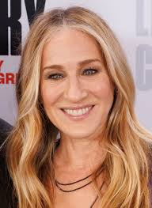

2026 Speaker Profile

Image: © Shawn Miller / Wikimedia Commons – Licensed under Creative Commons
Sarah Jessica Parker is an award-winning American actress, producer, and entrepreneur. She is widely recognized for her role as Carrie Bradshaw in the television series Sex and the City, a performance that earned her multiple Golden Globe and Emmy awards.
Beyond her acting career, Parker has built a reputation as a creative producer, fashion entrepreneur, and advocate for the arts. Parker has also become a strong advocate for reading and libraries. She has collaborated with the American Library Association to support librarians and fight book bans.
In April 2025, Parker visited Northwestern University to participate in the School of Communication’s “Dialogue with the Dean” series. During the event, Parker spoke with Dean E. Patrick Johnson about her decades-long career as an actor and producer, her work supporting literature and the arts, and the evolving landscape of television and film. The visit offered students an opportunity to engage directly with Parker about creative careers and collaborations.
Parker’s work reflects a commitment to storytelling, creativity, and cultural impact. As a commencement speaker, she brings insights about perseverance, artistic vision, and the value of embracing new opportunities.
Parker is scheduled to speak at Northwestern University’s 2026 Commencement ceremony on June 14, 2026 at 10:30 a.m. The ceremony will be held at the United Center in Chicago. During the event, she will also receive an honorary Doctor of Arts degree.